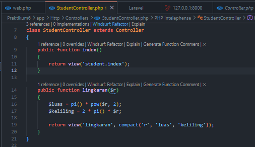
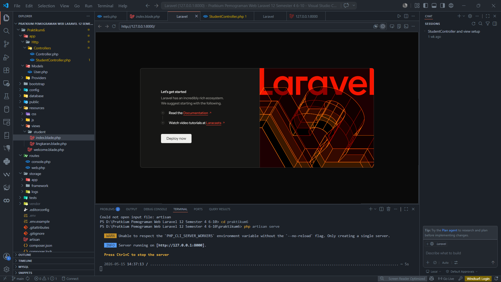
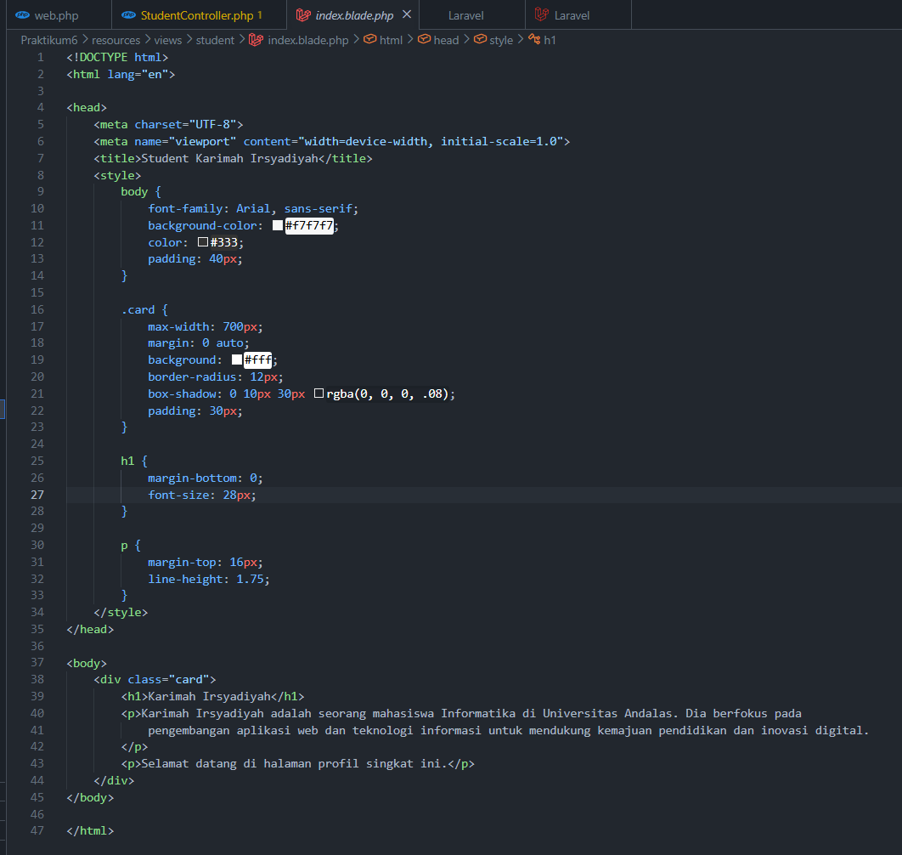
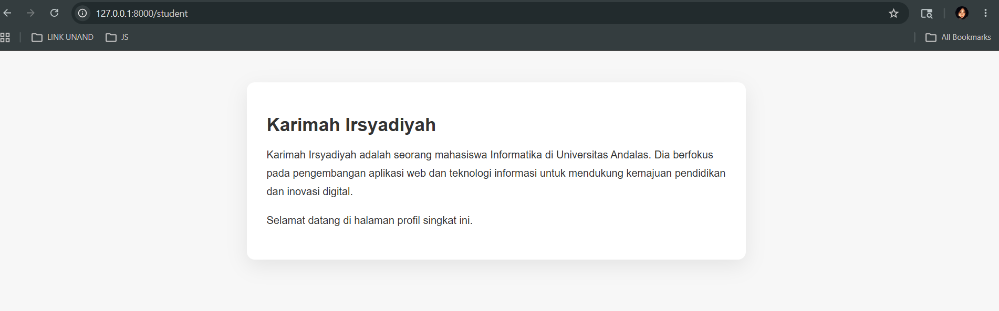
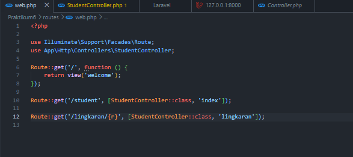

Praktikum Pemrograman Web – Pengenalan dan Instalasi Laravel 12
Dokumentasi proses instalasi dan konfigurasi awal framework Laravel 12 menggunakan Composer, PHP, Node JS, dan Visual Studio Code.
Apa itu Laravel?
Laravel adalah framework PHP berbasis MVC yang dikembangkan oleh Taylor Otwell. Framework ini bersifat open source dan dirancang untuk mempercepat pengembangan web modern dengan fitur routing, Blade template, authentication, Eloquent ORM, artisan CLI, middleware, dan banyak lagi.
- Framework PHP berbasis MVC
- Dikembangkan oleh Taylor Otwell
- Open source dan mudah dikustomisasi
- Mendukung pengembangan web modern
Blade Template
Artisan CLI
Routing
Middleware
Authentication
Eloquent ORM
Tools yang Digunakan
Peralatan penting untuk instalasi Laravel dan pengembangan web modern.
XAMPP
Menyediakan Apache, PHP, dan MySQL untuk lingkungan lokal Laravel.
Composer
Package manager PHP yang digunakan untuk mengelola dependensi Laravel.
Git
Version control untuk melacak perubahan dan mengunggah project ke Github.
Node JS
Runtime JavaScript untuk tool frontend dan build assets Laravel.
NPM
Dependency manager untuk mengelola paket frontend Laravel.
Visual Studio Code
Editor modern untuk menulis kode Laravel dengan efisien.
Requirements Laravel 12
Persyaratan server dan ekstensi yang diperlukan untuk menjalankan Laravel dengan lancar.
- PHP >= 8.2
- PDO Extension
- XML Extension
- OpenSSL
- Mbstring
- Tokenizer
- Fileinfo
- Session
- cURL
- DOM
- Ctype
Persiapan Sistem
Pastikan semua ekstensi PHP aktif dan sistem siap untuk menjalankan Laravel 12 secara stabil.
Langkah-Langkah Instalasi
Panduan step-by-step instalasi Laravel 12 untuk praktikum Anda.
Install Composer
Composer digunakan untuk mengelola package PHP dan men-install Laravel.
Install Git
Git digunakan untuk version control dan upload project ke Github.
Install Node JS dan NPM
Node JS dan NPM digunakan untuk frontend asset dan dependency management Laravel.
npm --version
Cek versi PHP
Membuat project Laravel 12
Masuk ke folder project
Menjalankan Laravel
Struktur MVC Laravel
Konsep Model-View-Controller yang digunakan Laravel untuk memisahkan logika aplikasi.
Model
Mengelola data dan database, termasuk query dan relasi Eloquent.
View
Menampilkan antarmuka pengguna menggunakan Blade template yang fleksibel.
Controller
Mengatur request dan response aplikasi, memproses input, dan menentukan alur.
Screenshot / Dokumentasi
Contoh tampilan dan hasil proses instalasi Laravel 12.





Repository Github
Kunjungi repository praktikum Laravel 12 untuk melihat dokumentasi lengkap dan kode sumber.
Lihat RepositoryKesimpulan
Laravel mempermudah pengembangan aplikasi web modern dengan arsitektur MVC, fitur lengkap, dan sistem development yang efisien. Instalasi Laravel 12 memberikan fondasi kuat untuk membangun aplikasi praktikum dan proyek web skala nyata.